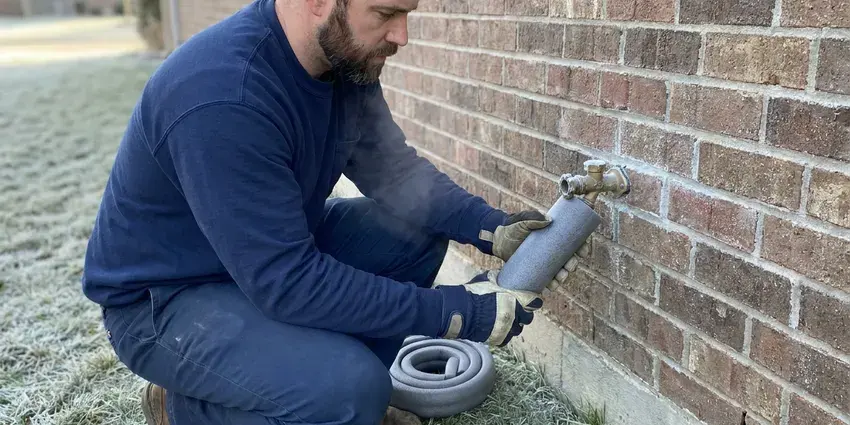

Gas Line Repair in North Lakes, AK
For reliable gas line repair in North Lakes, AK, CKN Plumbing offers expert service to keep your home safe.
- Same-Day Gas Leak Service
- Pressure Tested to Code
- Licensed Gas Line Plumbers
- Certified Gas Technicians

Professional Gas Line Service Available in North Lakes, AK.
If you smell gas, leave the house and call your gas utility, then call us for the repair.
Licensed Gas Line Repair and Leak Detection in North Lakes, AK
CKN Plumbing repairs natural gas and propane lines feeding water heaters, furnaces, ranges, dryers, fireplaces, pool heaters and outdoor kitchens. We use electronic gas detectors and soap testing to find leaks, then replace the damaged section with coated steel, CSST or polyethylene pipe as code allows.
Our expertise includes:
- Precision leak detection for all gas lines.
- Repair and replacement of natural gas and propane lines.
- Buried polyethylene and coated steel yard line replacement with tracer wire

Additional Plumbing Maintenance Services in North Lakes, AK
Our maintenance and specialty plumbing services in North Lakes, AK protect your home year-round and extend the life of every system.


Customers
Why Choose CKN Plumbing for Gas Line Repair in North Lakes, AK?
Choosing CKN Plumbing for your gas line repair means choosing peace of mind. We prioritize your safety and make sure all repairs are performed to the highest industry standards.
- Prompt Service, We respond quickly to gas line emergencies, understanding the urgency of these situations.
- Safety Focus, Our technicians are trained in gas safety protocols and use specialized equipment to detect and repair leaks the right way.
- Safety First, We follow strict safety standards and local Alaska codes for every gas line repair or installation.
Citywide Coverage
CKN Plumbing serves every neighborhood and suburb within North Lakes, ensuring that expert gas line repair is always within reach. Whether you're in an older district or a newer development, our team can reach you quickly.
Experienced Team
Each technician at CKN Plumbing is carefully vetted and trained specifically for gas line work, making sure they have the deep knowledge of gas codes and repair techniques needed for safe and effective service. You can trust our expertise in North Lakes, AK.
Safety-First Approach
We utilize specialized tools and procedures to safely isolate and repair gas leaks, making sure that every connection is secure and tested for integrity. CKN Plumbing is committed to delivering gas line services that meet the highest safety standards in North Lakes, AK.
Trusted Certified North Lakes Plumbing Services Professionals
At CKN Plumbing, we take pride in providing certified plumbing services throughout North Lakes, AK. Backed by recognized industry credentials, our experienced plumbers combine technical skill with genuine customer care. Whether it is repair, installation, or maintenance, we follow strict safety and quality standards to deliver lasting results you can trust.
Call Us Now PHCC Plumbing Contractor Recognition
PHCC Plumbing Contractor Recognition Better Business Bureau (BBB) Accreditation
Better Business Bureau (BBB) Accreditation Angi Certified Pro
Angi Certified Pro ISO 9001 Quality Management Certification
ISO 9001 Quality Management CertificationSafe Gas Line Repair Services in North Lakes, AK
Natural Gas Leak Detection & Repair in North Lakes
Detecting a natural gas leak requires specialized equipment and expertise. Our technicians use sensitive leak detectors, like combustible gas sniffers, to pinpoint the exact location of a leak, whether it's from a faulty fitting, a corroded pipe, or a damaged appliance connector. Once located, we'll carefully shut off the supply, repair or replace the damaged section of pipe, and thoroughly test the system to confirm there are no further leaks. This precise approach minimizes disruption and maximizes safety for your North Lakes home.

Cost of Gas Line Repair in North Lakes, AK
The cost of gas line repair in North Lakes, AK can vary a great deal depending on the nature and extent of the damage. Minor repairs, like fixing a loose fitting or replacing a small section of exposed pipe, might range from $250 to $700. More complex issues, such as extensive underground pipe replacement or repairs requiring significant excavation, could cost between $1,000 and $5,000 or more. We always provide a transparent, upfront estimate after a thorough inspection.
Gas Leak Detection in North Lakes
A rotten egg smell, hissing near a line, dead plants over a buried pipe or a gas meter that moves with everything off are common leak signs. We isolate sections of the system and use electronic combustible gas detectors to narrow the source. Soap solution confirms leaks at fittings, valves and unions. Once we find the leak, we give you a written repair price before starting.
Buried Yard Line Repair and Replacement in North Lakes, AK
Many older homes have steel gas lines running from the meter to the house or to a pool heater. Over time the wrap fails and the pipe corrodes, especially where sprinklers keep the soil wet. We call 811 to mark utilities before digging, then replace the line with polyethylene pipe and tracer wire or coated steel where needed. Trenching is backfilled and the yard is cleaned up when we are done.
Gas Appliance Line Installation & Repair in North Lakes, AK
Whether you're installing a new gas range, dryer, water heater, or outdoor grill, proper gas line connection is crucial. CKN Plumbing provides professional installation and repair of gas lines specifically for appliances. We ensure correct sizing, secure connections, and code-compliant shut-off valves. If your existing appliance line is leaking or damaged, our technicians in North Lakes, AK can promptly diagnose and fix the problem, restoring safe operation.
Emergency Gas Line Shut-Off & Repair in North Lakes
A suspected gas leak is an emergency that demands immediate attention. If you smell gas, evacuate immediately and then call 911 and your gas provider to shut off the main supply. Once the area is safe, CKN Plumbing can dispatch a team for emergency gas line repair in North Lakes. We put first these urgent calls, working quickly to locate the leak, make the necessary repairs, and ensure your system is safe for restoration of gas service, coordinating with the utility as needed.
Propane Gas Line Service in North Lakes, AK
Beyond natural gas, CKN Plumbing also offers expert repair and maintenance for propane gas lines. Propane systems, often used for outdoor kitchens, generators, or in areas without natural gas access, have their own specific requirements for installation and repair. Our team is proficient in working with both underground and above-ground propane lines, addressing problems like regulator failures, pipe damage, or connection leaks. We make sure your propane system in North Lakes, AK operates safely and efficiently.

Emergency Gas Line Repair in North Lakes
Gas leaks are emergencies that require immediate attention. CKN Plumbing offers emergency gas line repair services in North Lakes to address urgent situations quickly and safely. Our rapid response team is equipped to handle critical gas line failures, working efficiently to isolate the leak, perform the necessary repairs, and restore safety to your home, often coordinating with the local gas utility as needed.
Licensed Gas Line Repair Near Me in North Lakes, AK
When you search for 'gas line repair near me' in North Lakes, you want a local company that understands the specific infrastructure and building codes of Alaska. CKN Plumbing is deeply rooted in the community, providing fast and reliable service to our neighbors. We are always just a call away, ready to dispatch a qualified technician to your location.
As a local company, we are deeply committed to the safety and well-being of our community in North Lakes, AK. We strive to be the fastest and most dependable option for all your gas line repair needs, ensuring a safe and efficient gas system for your home or business.
CKN Plumbing at a Glance
- Licensed and insured plumbers serving North Lakes, AK
- Same-day appointments and 24/7 emergency response
- Clear written estimates, no hidden fees
- 4.9-star rated by 309+ Alaska customers
North Lakes Map
North Lakes Information
- Population
- 9,450
- Area codes
- Local
- Service area
- North Lakes and communities within 40 miles
- Nearby
- South Lakes, Gateway, Tanaina, Wasilla
Decades-old buried steel gas lines and damp soil lead to corrosion leaks in North Lakes, AK, so prompt licensed repair keeps families safe.
Expert Services
Trust our professionals for reliable CKN Plumbing solutions in North Lakes, AK.
Our Specialized Plumbing Services in North Lakes, AK
At CKN Plumbing, we provide a complete range of plumbing services across North Lakes, AK. From leak detection to full system installations, our team ensures fast, precise, and affordable service for both residential and commercial properties. Explore our core services below:


Here Is How Our Gas Line Repair Process Works in North Lakes, AK
Our gas line repair process in North Lakes, AK is designed to be thorough, safe, and efficient, ensuring minimal disruption to your home.
Request a Quote
Call (928) 470-9007 after you have reached safety and contacted your gas utility if you smell gas. We dispatch a licensed plumber as soon as possible.
Locate and Repair
We test the system to find the leak and explain the repair options. After your approval, we replace the damaged pipe or fittings to current code.
Test and Restore
We pressure test the repaired system and arrange inspection where required. Then we help restore service and relight your appliances.
Frequently Asked Questions About Gas Line Repair in North Lakes
The cost for gas line repair in North Lakes, AK can range from approximately $250 for minor fixes to $5,000 or more for extensive replacements or repairs requiring excavation. Factors like the leak's location, accessibility, and the type of piping influence the final price. We provide transparent, upfront estimates after a thorough assessment.
No, gas piping should be repaired by a licensed professional. Mistakes can cause fires, explosions or carbon monoxide problems, and DIY work may not pass inspection.
Yes, many major gas line repairs and all new gas line installations in North Lakes typically require a permit from local building authorities. This confirms the work meets safety codes. CKN Plumbing will advise you on permit requirements and can help arrange the necessary inspections.
Common signs of a gas leak include a strong sulfur or 'rotten egg' smell, a hissing sound near a gas line or appliance, visible damage to a gas pipe, or dying vegetation over an underground gas line. If you notice any of these, evacuate immediately and call 911.
If you suspect a leak at your gas meter or the main service line leading to your home, do not attempt to fix it yourself. This is the responsibility of the gas utility company. Evacuate your property immediately and call their emergency line. We can assist with repairs to your private gas lines once the utility has addressed its portion.
Simple repairs take an hour or two. Buried yard line replacements often take a full day, plus inspection time if a permit is required.
Absolutely not. Gas line repair is very dangerous and should only be performed by licensed and certified professionals. Incorrect repairs can lead to serious gas leaks, explosions, fires, and carbon monoxide poisoning. Always call a professional like CKN Plumbing.
Yes, most gas line repairs and all new installations in North Lakes, AK require permits from the local building department. This means the work is inspected and meets all safety and code requirements. CKN Plumbing handles all necessary permitting and coordination with inspectors for you.
What People Are Saying About Our Plumbing Experts?

Laura S.
I scheduled a water heater replacement, and the team made the process smooth and affordable. The new unit works perfectly, and they cleaned up after completing the job.
Water Heater Replacement · Wasilla, AKSofia M.
Two new toilets installed in one visit, no mess left behind, and the tech even adjusted a faucet he noticed was dripping. Fair pricing and really friendly.
Toilet Installation · Wasilla, AK
Daniel K.
A pipe burst at 11 pm and they actually answered. The plumber showed up within the hour, shut everything down, and had us back to normal the next morning. Could not ask for more.
Emergency Plumbing · North Lakes, AK
Patricia H.
We had a slab leak that two other companies could not find. CKN Plumbing located it in under an hour, explained our options, and the price matched the quote to the dollar.
Slab Leak Repair · Fishhook, AK
Robert G.
The trenchless sewer replacement saved our front yard. They walked us through the camera inspection footage first so we knew exactly what we were paying for.
Sewer Line Replacement · South Lakes, AK
Mark T.
When our office needed drain cleaning, CKN Plumbing provided quick, reliable service. The plumber arrived on time and made sure every drain flowed perfectly before leaving. Very satisfied.
Drain Cleaning · Palmer, AK